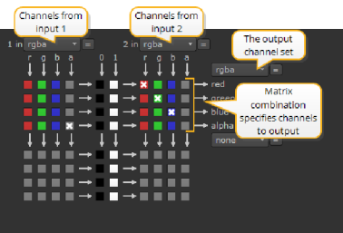

核武器 有两个主要的频道交换节点: 洗牌和洗牌。Shuffle 允许您从单个图像 (1 个输入) 重新排列通道，然后将结果输出到合成树中的下一个节点。ShuffleCopy 允许您从两个图像 (2 个输入) 重新排列通道，并输出结果。让我们先看看 ShuffleCopy 节点。
|
 |
| ShuffleCopy 矩阵。 |
• 来自输入 1 的通道 -第一组通道盒是由节点上的输入 1 提供的通道。如上所示，前景元素的默认 Rgba 设置被选中。
• 来自输入 2 的通道 -第二组通道盒是由节点上的输入 2 提供的通道。
要交换通道，请执行以下操作:
| 1。 | 单击 渠道 > 洗牌 或 洗牌 插入随机或随机复制节点。记住，当你只想在一个上游节点上交换频道时，你可以使用洗牌，当你想在两个独立的节点上交换频道时，你可以使用洗牌，比如前台和后台分支。 |
| 2. | 从中选择传入通道 在 1 和 在 2 (可选) 下拉菜单。以这种方式，您最多可以选择八个频道。 |
| 3. | 从右侧的下拉菜单中选择要将传入通道定向到的层。以这种方式，您最多可以选择八个频道。 |
| 4. | 如果要将通道定向到的传出层尚不存在，请使用 新 右侧下拉菜单上的选项。 |
| 5. | 根据需要单击生成的矩阵以交换通道。 |
提示: 如果您只需要将一个通道从一个数据流复制到另一个数据流，请使用 渠道 > 复制 ,而不是洗牌。然后，指定要复制的通道和输出的目标通道。
|
|